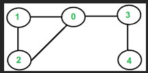
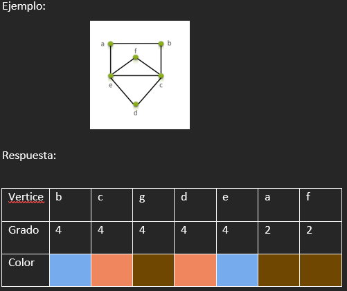

Inducción Matemática
La inducción matemática es un método de demostración que se utiliza cuando se trata de establecer la veracidad de una lista infinita de proposiciones.
Ejemplo: Formula (2n + 1) = n(n+2)
Solución:Cambiar por 1 ((2(1)) + 1) = 1(1+2) 2 + 1 = 1(3) 3 = 3
Ejercicio: Comprobar con K (2k + 1) = k(k+2)
Respuesta
+ 1 (2k + 1 + 1) = k + 1 (k + 1 +2) :(2(k + 1) + 1) = k + 1 (k + 1 +2) :(2(k + 1) + 1) = (k + 1) (k + 3)
Números Primos
En matemáticas, un número primo es un número natural mayor que 1 que tiene únicamente dos divisores distintos: él mismo y el 1. 1 2 Por el contrario, los números compuestos son los números naturales que tienen algún divisor natural aparte de sí mismos y del 1, y, por lo tanto, pueden factorizarse. El número 1, por convenio, no se considera ni primo ni compuesto.
Ejemplo:Primeros 100 números primos 2, 3, 5, 7, 11, 13, 17, 19, 23, 29, 31, 37, 41, 43, 47, 53, 59, 61, 67, 71, 73, 79, 83, 89, 97,…
Teorema Fundamental de la Aritmética
El teorema fundamental de la aritmética afirma que cualquier número natural mayor que 1 se puede descomponer como un producto de números primos -pudiendo repetirse algunos- y esta forma es única para dicho número, aunque el orden de los factores pueda ser diferente.
Ejemplo: si n = 2, se puede expresar como: 2 = 1 × 2, que es primo. De igual forma se procede con los siguientes números: 3 = 1 × 3 4 = 2 × 2 5 = 1 × 5 6 = 2 × 3
Teorema de la División
Una consecuencia importante del teorema de la división, es que nos sirve para justificar el método habitual en que representamos los números enteros, mediante un sistema de representación posicional.
Ejemplo: Si queremos hallar el resultado de dividir 23 entre 7 tenemos: 23=7x3+2, lo que quiere decir que el cociente es 3 y el residuo es 2. a = 23 b = 7 q = 3 r = 2
Divisibilidad
En matemáticas se dice que un número es divisible entre otro siempre y cuando su división sea exacta, es decir, el resto sea cero.
Ejemplo: 20 es divisible entre 4 porque nos da 5 de cociente y cero en el resto. El conjunto de divisores de un número es el grupo de números que pueden dividir esactamente a dicho número. Los div(20) ={1, 2, 4, 5, 10, 20}
Máximo Común Divisor
Dados dos números enteros positivos su máximo común divisor no es más que el mayor de los divisores comunes de ambos números.
Ejemplo: Calcular el m.c.d. Tomemos 45, 75. 75 = 45*1 + 30; 45 = 30*1 + 15; 30 = 15*2 + 0 R// 15
Ejercicio: Encontrar el MCD de 18/120
Respuesta
120 = 18*6 + 12; 18 = 12*1 + 6 ;12 = 6*2 +0 ; R// 6
Grafos
Un grafo es un conjunto, no vacío, de objetos llamados vértices (o nodos) y una selección de pares de vértices, llamados aristas que pueden ser orientados o no. Típicamente, un grafo se representa mediante una serie de puntos llamados vértices conectados por líneas llamadas aristas. Complementos de los grafos
Aristas adyacentes
Dos aristas son adyacentes si tienen un vértice en común
Lazos
Es una arista cuyos extremos inciden el mismo vértice.
Aristas paralelas
Dos o más aristas que se conectan al menos dos vértices iguales.
Vértices adyacentes
Los vértices son adyacentes cuando comparten la misma arista.
Tipo de grafos
Grafo orientado Es un tipo de grafo en el cual el conjunto de las aristas tiene una dirección definida, a diferencia del grafo generalizado, en el cual la dirección puede estar especificada o no.
Grafo simple: Es aquel que acepta una sola una arista uniendo dos vértices cualesquiera. Esto es equivalente a decir que una arista cualquiera es la única que une dos vértices específicos.
Grafo conexo :Un grafo se dice conexo si, para cualquier par de vértices a y b en G, existe al menos una trayectoria
Matriz de Adyacencia En esta implementación de matriz, cada una de las filas y columnas representa un vértice en el grafo. El valor que se almacena en la celda en la intersección de la fila X y la columna Y indica si hay una arista desde el vértice X al vértice Y.
Subgrafo: Es un grafo que esta contenido dentro de otro grafo y que se obtiene eliminando algunas aristas y vértices del grafo principal.
Grafos isomorfos Dos grafos son isomorfos cuando existe una correspondencia biunívoca (uno a uno), entre sus vértices de tal forma que dos de estos quedan unidos por una arista en común.
 Respuesta
Respuesta
Ruta de Euler:Una ruta o camino de Euler es una trayectoria que contiene todas las aristas del grafo y recorre una arista exactamente una vez.
Ejemplo: Calcular la Ruta o Camino de Euler del siguiente grafo:R// 4, 3, 0, 1, 2, 0

Ejercicio: Calcular la Ruta o Camino de Euler del siguiente grafo:
Respuesta
Respuesta: C, D, E, A, B, C, E, F
Circuito de Euler: Un circuito de Euler es un Camino de Euler con la diferencia que empieza y termina en el mismo vertice es decir es un camino cerrado que recorre cada arista exactamente una vez.
Ejemplo: Calcular el Circuito de Euler del siguiente grafo:R// 1, 2, 0, 4, 3, 0, 1
Ejercicio:Calcular el Circuito de Euler del siguiente grafo:
Respuesta
Respuesta: E, F, D, G, C, B, E, D, B, A, C, E
Coloración de Grafos: Es una asignación de etiquetas llamadas colores a elementos del grafo. De manera simple, una coloración de los vértices de un grafo tal que ningún vértice adyacente comparta el mismo color es llamado vértice coloración.

Ejercicio:
Respuesta